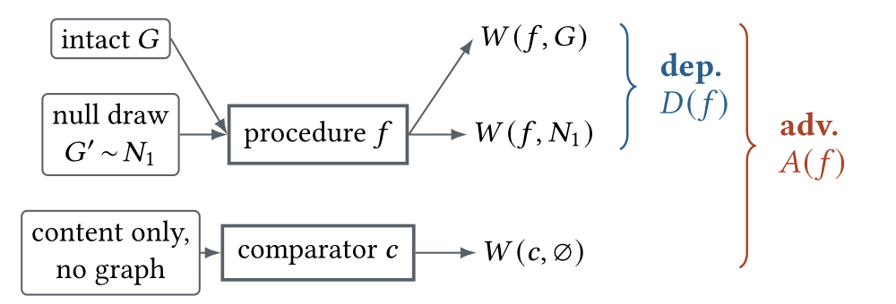

Preprint · 2026
Dependence Is Not Advantage: What Randomizing the Graph Does Not Measure
Abstract
Graph ablation studies often interpret a performance drop after edge randomization as evidence that graph structure improves prediction. These are different comparisons: randomization measures how a fixed procedure depends on the observed edge arrangement, whereas improvement requires comparison with a specified graph-free baseline. Let D = W(f, G) − W(f, N₁) denote dependence on the edge arrangement and A = A(f; c) advantage over a comparator with the same node content and no graph. With survival ratio s = W(f, N₁) / W(f, G), the relative drop is 1 − s.
For an enumerated scorer class, we derive the tightest monotone upper envelope of advantage as a function of this drop and characterize the penalty created by inverted scorer orderings. For scorers whose positive scores require a common neighbor, we also bound null performance using the surviving common-neighbor mass. On ogbl-collab, the 12 arrangement-reading scorers lose between 89.52% and 99.90% of their intact Hits@50 under the degree-preserving null, while their advantages range from −0.3147 to 0.2208. The modularity-matrix spectral scorer loses 91.70% yet has advantage −0.0531 against the content-only comparator; GraphSAGE loses 34.25% and has advantage 0.1423 (95% CI [0.1309, 0.1537]). The same contrasts disagree across five additional public benchmarks.
Finally, we treat a graph null model as a distribution over a constrained graph space and show why the support of its sampling algorithm must be checked separately. The results motivate reporting the intact score, graph-free baseline, survival ratio, and sampler diagnostics together. They concern evaluation validity, not downstream recommendation benefit.
The central distinction
Two contrasts, two questions.
Randomizing a graph and removing a graph are not interchangeable interventions. The paper keeps their estimands separate.
Dependence
D = W(f, G) − W(f, N₁)
How much a fixed graph procedure changes when the observed edge arrangement is replaced by a degree-preserving null.
Observed graph ↔ degree-preserving null
Advantage
A = A(f; c)
How the graph procedure compares with a specified content-only comparator under the same evaluation target.
Graph procedure ↔ content-only comparator

Citation
Duggireddy, Prahas. “Dependence Is Not Advantage: What Randomizing the Graph Does Not Measure.” Preprint, 2026.
Copy the entry below or download it as a .bib file.
@misc{duggireddy2026dependence,
author = {Duggireddy, Prahas},
title = {Dependence Is Not Advantage: What Randomizing the Graph Does Not Measure},
year = {2026},
note = {Preprint},
url = {https://third-wheel.github.io/dependence-is-not-advantage/}
}For software reuse, cite the versioned release and report the version used; see the repository’s CITATION.cff. For the method or results, cite the associated paper.